VALOKUVAUS / 2006–2026
Liikkeessä.
Hetkessä.
Rullalautailua, lumilautailua, ihmisiä ja paikkoja. Kuva-arkisto vuosien varrelta — sama uteliaisuus, eri ympäristö.
151valokuvaa4näkökulmaa2006–2026kuva-arkisto
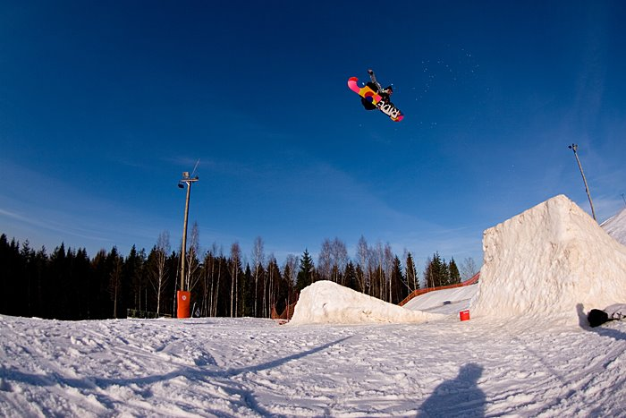

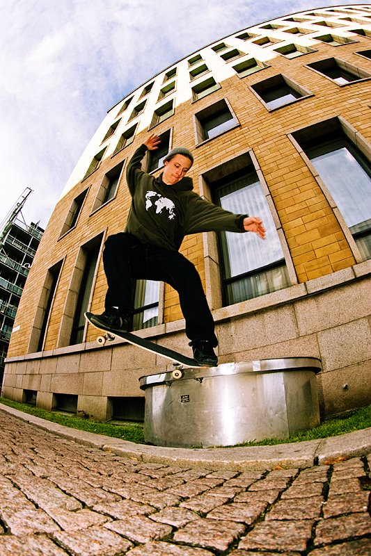
esakrukijonttu72

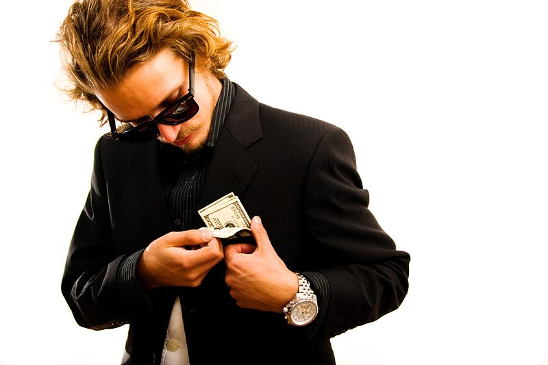
rahaonaikaa
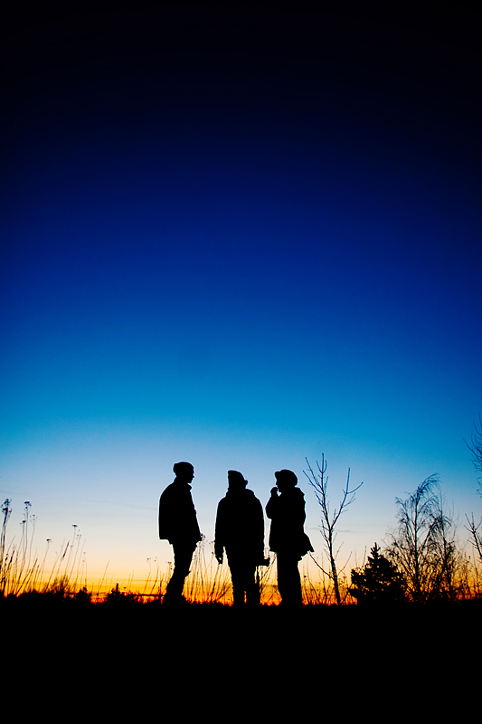
three dudes and sunset
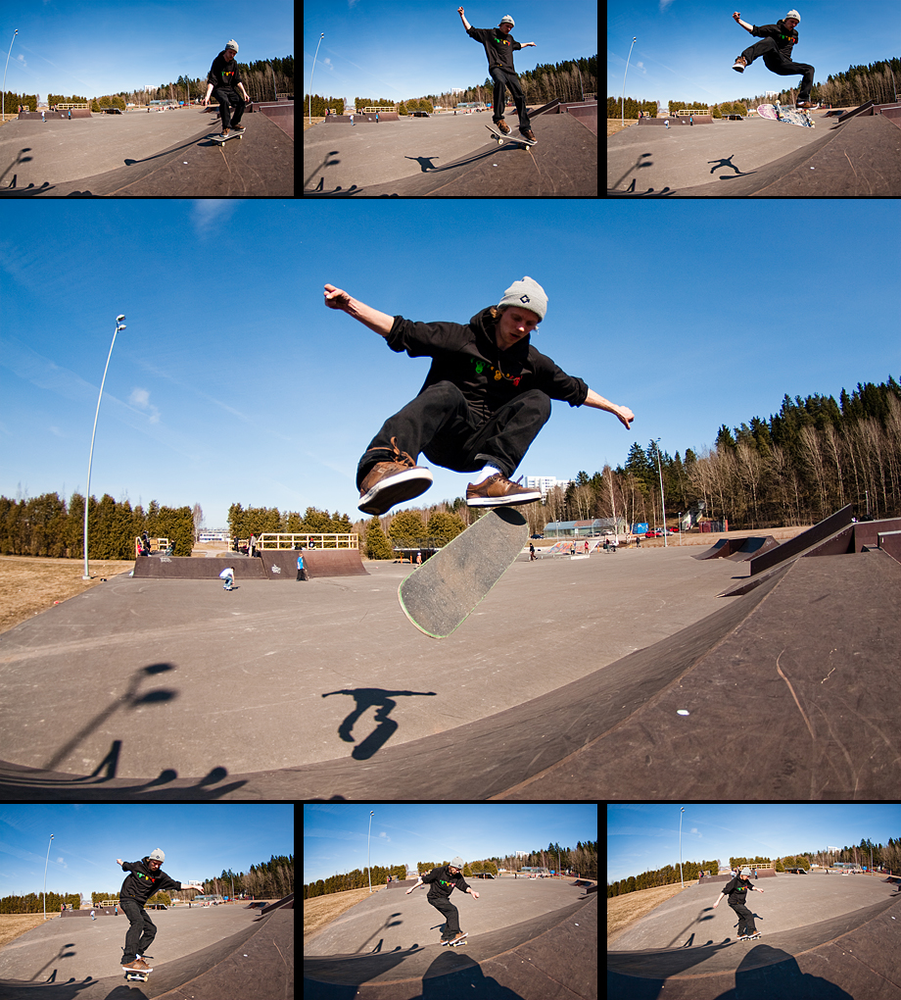
5 frames per sec
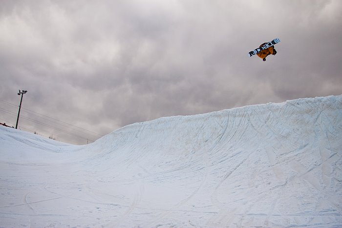
0paippilohe
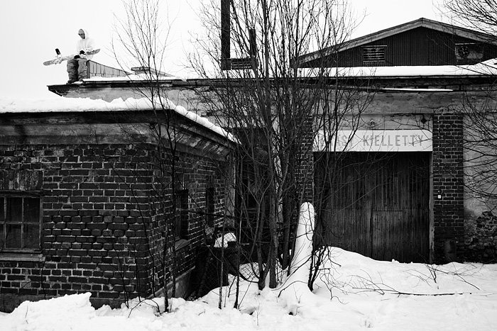
1nissineistuskelee
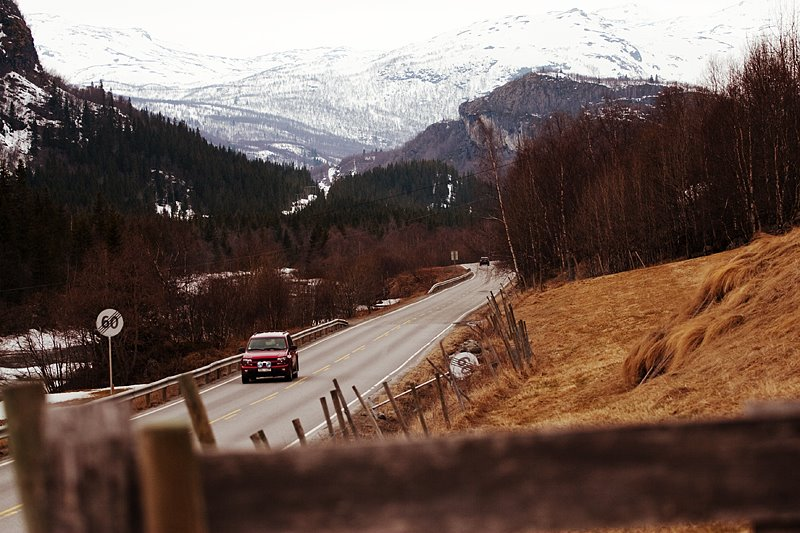
chervoletmainos eeronopabänäflip
eeronopabänäflip
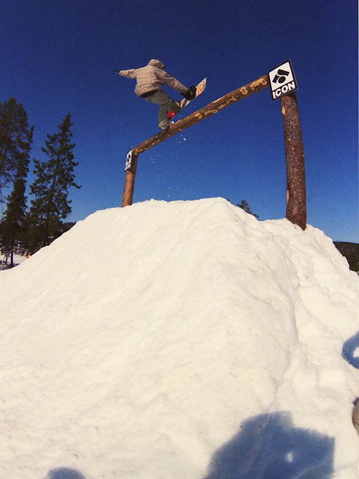
anssionefoot
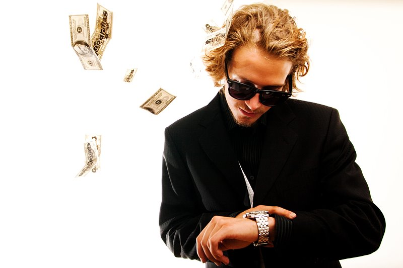
aikaonrahaa
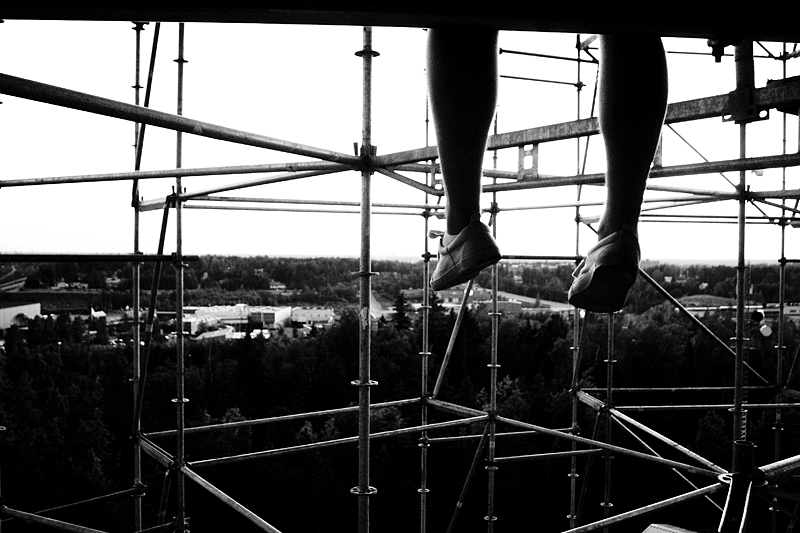
chillingArkiston kuvat avautuvat suurempina. Voit selata niitä myös nuolinäppäimillä.
KUVASTA KOKONAISUUDEKSI